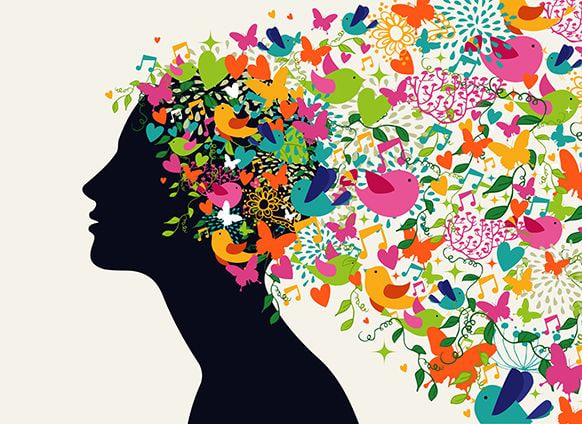
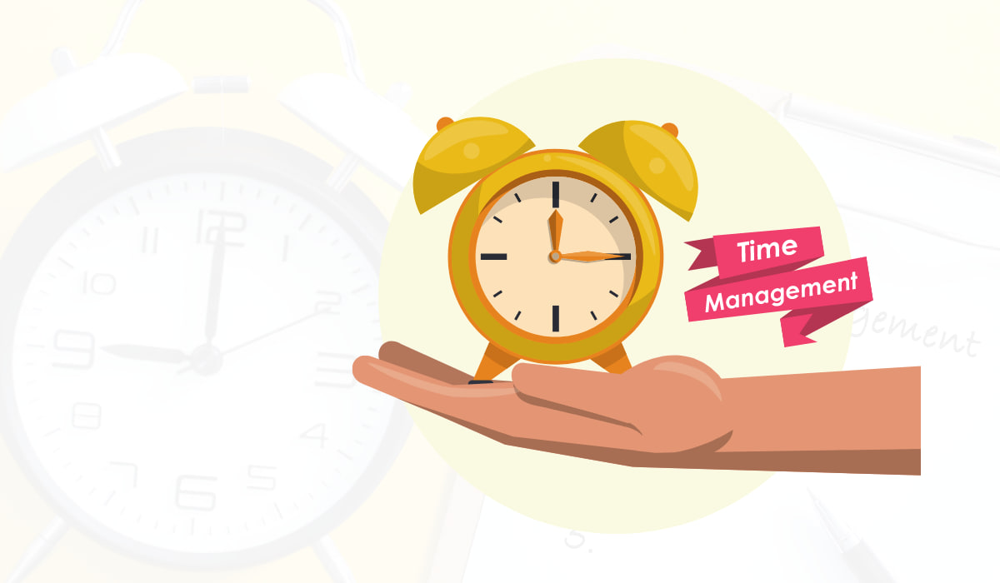

| 1. |
Collaborative Working |
|
I have been in many circumstances that require this skill.
This include group work projects in many assignments, projects and community services.
This all has helped me enhance my communication and collaboration skill. |
| 2. |
Creative Thinking |
 |
This of my skill is brought up by my involvment with the art. This includes my hobby in theatre and drama, as well as the Designing classes I take side by side. |
| 3. |
Leadership |
|
Leadership is bring about when taking over several projects or assignments. I have been inclined to this nature myslef over time. |
| 4. |
Time Mangement |
 |
Being Participant in Many extra curricular activities and hobbies doesn't come without a cost. That is shortage of time. To avoid this, in the long haul, I've achieved just that. |
| 5. |
Effectual Decision Making |
|
When faced with several daunting option where they all seem correct or wrong, effectual decision making comes to play. I have been able to practice just thi through the different leadership positions I have worked in. |